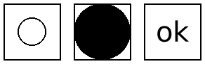

8.9
11 Conditional Combinations
| (require pict/conditional) | package: pict-lib |
这些 pict 控制流算子决定使用几个 pict 中的哪一个。 所有的分支都被评估;结果是由正常条件流选择的图片与应用于所有其他图片的 ghost 组合而成的图片。 其结果是一张足够大的图片,可以容纳每一种选择,但只显示所选择的那一种。 这对分阶段的幻灯片很有用,因为所选择的图片可能会随着每张幻灯片的变化而变化,但其大小和位置不会变化。
syntax
(pict-if maybe-combine test-expr then-expr else-expr)
maybe-combine =
| #:combine combine-expr
根据 test-expr 选择 then-expr 或 else-expr ,类似于 if 。
使用 combine-expr 将所选的可见图像与另一个不可见图像结合起来,默认为 lbl-superimpose 。
Example:
> (let ([f (lambda (x) (pict-if x (disk 20) (disk 40)))]) (hc-append 10 (frame (f #t)) (frame (f #f))))
Added in version 1.4 of package pict-lib.
syntax
(pict-cond maybe-combine [test-expr pict-expr] ...)
maybe-combine =
| #:combine combine-expr
根据第一个成功的 test-expr 选择一个 pict-expr ,类似于 cond 。
使用 combine-expr 将所选的可见图像与其他不可见图像结合起来,默认为 lbl-superimpose 。
Example:
> (let ([f (lambda (x) (pict-cond #:combine cc-superimpose [(eq? x 'circle) (circle 20)] [(eq? x 'disk) (disk 40)] [(eq? x 'text) (text "ok" null 20)]))]) (hc-append 10 (frame (f 'circle)) (frame (f 'disk)) (frame (f 'text)))) 
Added in version 1.4 of package pict-lib.
syntax
(pict-case test-expr maybe-combine [literals pict-expr] ...)
maybe-combine =
| #:combine combine-expr
根据 test-expr 和每个 literals 列表选择一个 pict-expr ,
与 case 类似。
使用 combine-expr 将所选的可见图像与其他不可见图像结合起来,默认为 lbl-superimpose 。
Example:
> (let ([f (lambda (x) (pict-case x [(circle) (circle 20)] [(disk) (disk 40)] [(text) (text "ok" null 20)]))]) (hc-append 10 (frame (f 'circle)) (frame (f 'disk)) (frame (f 'text))))

Added in version 1.4 of package pict-lib.
这些函数有条件地显示或隐藏一个图像,本质上是在 pict 和 (ghost pict) 之间进行选择。
两者之间唯一的区别是默认行为和 show? 和 hide? 布尔值的相反含义。
提供这两个函数是为了记忆的目的。
Added in version 1.4 of package pict-lib.